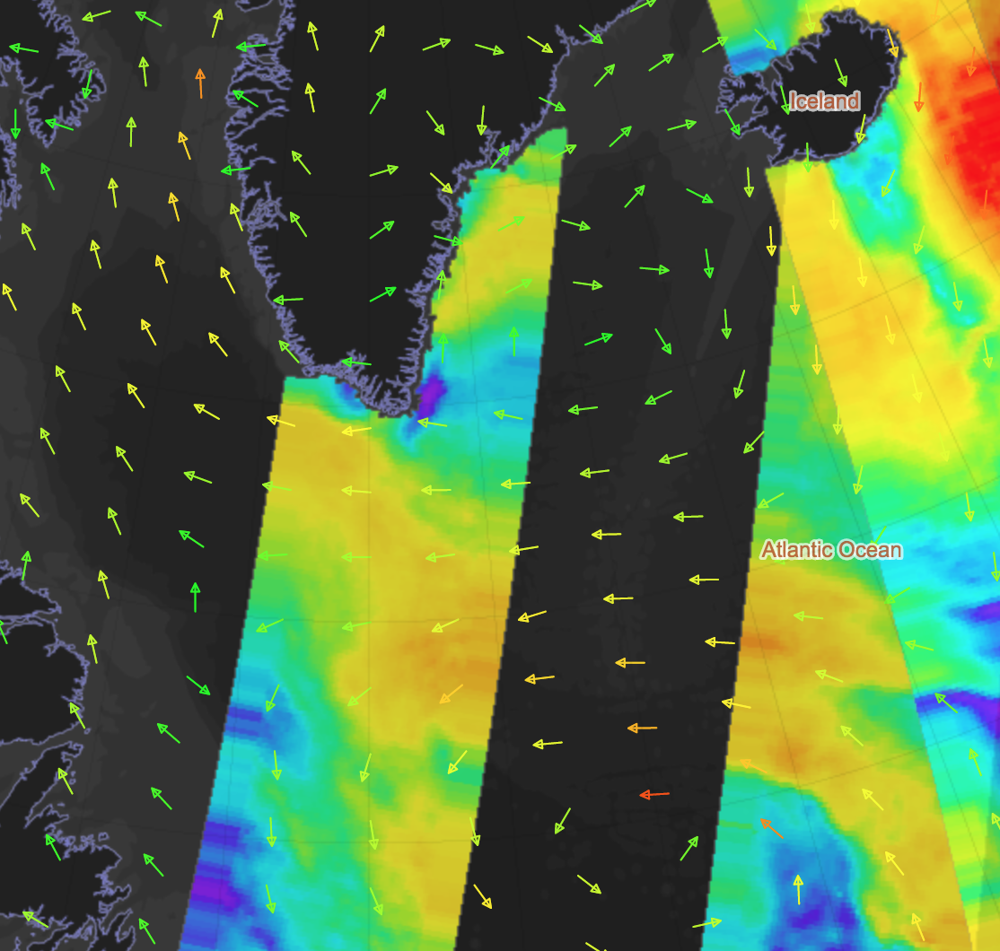

Satellite Oceanography Laboratory
2014
Syntool Arctic
as a tool to perform sea surface monitoring
in the Arctic region
Speaker
Ilya Bolkhovsky
Contributors
Vyacheslav Shebanov,
Bertrand Chapron,
Vladimir Kudryavtsev
Environmental monitoring
software
Full image of ASCAT wind retrievals from roughly 23Z 09/10/14
showing storm force low in the eastern Atlantic. © EUMETSAT
Main challenge is
the variery of
Products
|
Formats
|
and also
|
What do we need to build
an environmental monitoring
software?
A single entry point
to search and access data
At first.
Satin
Our ocean remote sensing data catalog
Over 30 pre-selected products of se surface temperature, sea ice concentration, scatterometer wind, altimetry and other.

The catalog provides
- Clear UI for beginners
- Long time series of measurements
including today's measurements - RESTful API for data search
- Standardized data access via OPeNDAP servers
Alright,
We have data.
Actually
A lot of data...
But with different
resolution and coverage.
How to show them together?
Put all data on a map
Yet it is not so simple:
- Retrieve requested timespan
- Apply masks and parameters correction
- Reproject
- Choose palette and visualization strategy
- Create tiles
And it is even more complex for vectorial data (wind or pressure)
Syntool Arctic Portal
 http://arctic.solab.rshu.ru
http://arctic.solab.rshu.ru
Combine different products

Catalog of products: multiple items can be selected.
Combine different products
TrueColor, Sea Surface Temperature (both MODIS)
and Scatterometer wind (ASCAT)
Change layers transparency

This dialog allows to change layers order and transparency
Change layers transparency
Phytoplankton bloom and Sea Surface Temperature (MODIS)
Timeline

Dynamic visualizations
 and Current Geostrophic Velocities (AVISO)")
Sea Ice Concentration (AMSRE)
and Current Geostrophic Velocities (AVISO)
Vectorial data
Model wind (NCEP GFS)
Vectorial data
Model wind (NCEP GFS)
and Scatterometer wind (ASCAT)
Vectorial data

MODIS image and Polar low location
Vectorial data

MODIS image and Polar low location